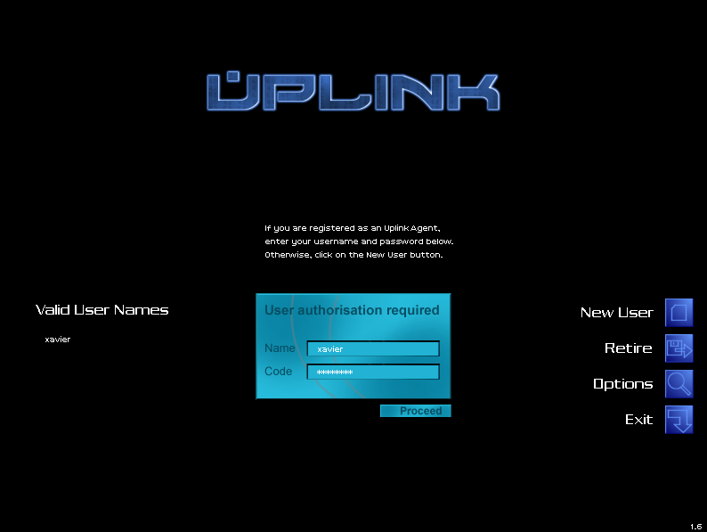
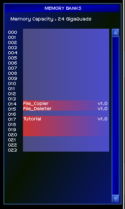

Hatırlarsanız, geçen sayımızda, kendimizi İnternet üzerinde maskelememizi sağlayacak bir iletişim ağı projesi olan TOR projesini incelemiştik. Peki neden maske takmak ister bir insan? Tek cevap vardır:Tanınmamak. Peki, tanınmamak istemesinin sebebi ne olabilir? Kimliğini saklamak.
Hırsızlık ve soygunculuk, gerçek dünyada gelişerek devam ederken, sanal ortam ve bilgisayar teknolojisinin gelişmesi ile bu alana da sıçradı. İnsanlar kişisel bilgilerini bilgisayar ortamına aktarıp, finansal yönetimlerini bu mekinelere verdikleri zaman, soygun ve hırsızlığın platformu da buna göre kendini şekillendirdi. Eli tüfekli ve yüzü maskeli atletik soyguncuların yerini, koca göbekli, atletli ve sürekli bilgisayar başında oturan soyguncular aldı. Bu soygunculara ise “hacker” dendi.
Aslında “hacker” tabiri, sadece bir bilgisayar kavramı değildir. “Hack” kavramı, karşılaşılan bir sorun ve problemi, akıl dolu ve kendine has bir yöntem icat ederek geçmek anlamına gelir. Ancak bu kavram, dünya medyasının da büyük yardımı ile, sadece bilgisayarların güvenlik açıklarından faydalanarak, sistemlere yasa dışı giriş yapan bilgisayar suçluları için kullanılan bir tabir haline geldi. Bu elbette ki yanlış ve haksız bir tanım. Ancak çok da temelsiz sayılmaz. Bu kavram, bilgisayar terminolojisi olarak, MIT’den ortaya çıktı. MIT, bilgisayar laboratuvarlarında öğrencilerin çalışmaları dışında işler yapmamaları için, çeşitli kısıtlayıcı tedbirler almıştı. Ancak bunu kabullenmeyen bilgisayar mühendisliği öğrencileri, aralarında bir grup oluşturarak, çeşitli “hack” yöntemleri ile bu kısıtlamaları aşmanın yollarını aradılar. Bu grupta, Özgür Yazılım Vakfı’nın kurucusu ve özgür yazılım hareketinin başlatıcısı olan Richard M. Stallman da vardı. :-) İşte “hack” tabiri, bilgisayar güvenliğini by-pass etmek anlamını buradan kazandı. Sonra da sadece bu iş için kullanılır oldu.
Bilgisayar soygunculuğu, edebiyatta, filmlerde ve -elbette ki- bilgisayar oyunlarında da kendine yer buldu. Yazımızın konusu olan Uplink de, Introversion Software firması tarafından geliştirilmiş bir hack simülasyon oyunu. Oyun, Uplink Corporation adlı, bilgisayar hackerlerı için iş sağlayan bir firmanın yöneticilerinden e-posta almamızla başlıyor. E-postada, Andromeda RC isimli bir firmanın İnternet’i hedef alan bir virüs çalışması başlattığı belirtilmektedir. “Revolution” adlı bu virüs, İnternet’i çökertmeyi amaçlamaktadır. Ancak bir başka firma olan Arunmor, “Faith” isimli karşı virüsünü üreterek, “Revolution” virüsünü temizlemeye çalışmaktadır. Oyuncu olarak bu iki firmadan birini seçebilir ya da her ikisini de görmezden gelerek, bağımsız hacker olarak çalışabilirsiniz.
Oyun, ticari lisansa sahip. GNU/Linux, Windows, MAC ve Android için hazırlanmış olan oyunu, 10$ karşılığında Desura, Steam ya da Ubuntu Yazılım Merkezi’nden alabilirsiniz.
Oyunun asgari sistem gereksinimleri:
- Linux kernel 2.6
- Intel Pentium 300 Mhz veya dengi AMD işlemci
- 32 MB ana bellek
- 300 MB disk alanı
- OpenGL destekli 16 MB ekran kartı
Muhtemelen hepinizin sistemi oyunu açabilecek kapasitededir zaten. :-)
Oyunu başlattığınızda, Uplink sunucusuna bağlantı sağlayan bir ana menü gelecek ve sizden sonraki adımlarda burada bir kullanıcı hesabı oluşturulmanız istenecektir. Yani oyuncuların dilinde profil adı. “Register as An Uplink Agent” diyerek kullanıcı hesabınızı oluşturuyorsunuz. Çıkan yazıları iyi okuyun. Açıklamalarda Uplink Gateway sistemlerinde neler, yapıp, neleri yapamayacağınız belirtiliyor. Bunları iyi anlamanız, oyunu için hayati öneme sahip. Hesabınızı oluşturduktan sonra, Gateway sisteminizin bulunduğu şehri, önünüze gelen dünya haritasından seçmeniz gerekiyor. Oyunda bu haritayı bol bol kullanacağız. Sonrasında ise Gateway sisteme giriş yapıyoruz.

Gateway, kırma işlemlerimiz için kullandığımız bir Uplink bilgisayarıdır. Yani oyunda kendi yerel makineniz ile Uplink Corp.’un size sağladığı güçlü bir bilgisayara bağlanarak, kırma işlemlerinizi bu bilgisayar üzerinden yapıyorsunuz. İşte bu bilgisayar Gateway deniyor. İlk başladığınızda, 60 Ghz işlemci, 1 Gqls bant genişliği ve 24 Gq (gigaquad diye atmasyon bir birim kullanmışlar.) ana belleğe sahip bir makine kiralıyorsunuz. Evet, makinemizin bize aylık maliyeti 300$. Yaptığınız işlerden kazandığınız paralar ile bu kirayı ödüyor, Gateway sisteminize daha güçlü donanımlar, daha iyi yazılımlar alabiliyorsunuz. Bunları ileride ayrıntılı anlatacağım. Şimdilik Gateway’in ne olduğunu açıklamak yeterli.
Gateway sisteminize bağlandıktan sonra, oyun size alıştırma kısmını isteyip istemediğinizi soracak. Eğer ilk defa oynayacaksanız mutlaka ama mutlaka burayı oynayın derim. Uplin’in test sunucusuna bağlanarak, sistemin sizden istediklerini yapacaksınız. Oyun size burada da neyi nasıl yapacağınızı anlatacak. Bu kısmı es geçmeyin. Öncelikle oyunumuzun ana menüsüne bakalım.

Uplink’e kayıt olduktan sonra oyunun ana menüsü bu şekilde olacaktır. Soldan kayıtlı hesabınızı (hesaplarınızdan birini) seçerek, sisteme giriş yapabilirsiniz. Sağ tarafta bulunan “New User” yeni bir hesap açmanızı ve bir başka Gateway kiralamanızı sağlar. “Retire” seçili hesabınızı silmenizi sağlar. “Options” kısmı oyunun ayarlarını açar. Buradan grafik, ses ve varsa oyununuzun tema ayarlarını yapabilirsiniz. “Exit” oyunu kapatır.
Gateway arabirimimize gelecek olursak: Sol en üst köşedeki çarpı işareti, bağlı olduğumuz tüm bağlantıları kapatır ve ana menüye dönmemizi sağlar. Hemen yanında ise, saat ve tarih yer alıyor. Elbette bu oyunun tarih ve saati. Sınırlı vakit içeren görevlerde, burası kalan zamanınızı gösterecektir. Hemen yanında ise, işlem yapmış olduğunuz (yani bağlandığınız) bilgisayarın IP adresi görünüyor. 127.0.0.1 bizim Gateway adresimizdir.
Hemen yanında ise, zaman kontrol barı var. En soldaki “Pause” tuşu oyunu durdurur. Sonraki “Play” tuşu ise zamanın normal seyrinde oyunu devam ettirir. Sağındaki “Fast Forward” tuşu zamanı iki kat hızlandırır, en sağdaki “Triple Forward” tuşu ise zamanı 3 kat hızlandırır. Birşeylerin olmasını beklerken, ya da bir dosyanın bilgisayara atılmasını beklerken hızlandırma tuşlarını kullanabilirsiniz. “Pause” tuşunu ise oyuna geçici olarak ara vermekten ziyade, bir bilgisayara bağlandığınızda, dosyaları incelemek için de biraz hilemsi olarak kullanabilirsiniz.
Hemen üst ortada ise işlemci kullanımınızı görebilirsiniz. Bu işlemci, Gateway sisteminizin işlemcisidir. Eğer dolarsa, herhangi bir sisteme giriş yapamazsınız. İşlemci göstergesinin altındaysa, o an işlemciyi kullanan uygulamalarınız listelenir. İşlemci kullanımı artarsa, bunlardan bazılarını devre dışı bırakmak durumunda kalırsınız. Sağ üst köşede ise, Dünya haritası yer almaktadır.

Burada Gateway ve ağ üzerinde IP adresini bildiğimiz diğer makinelerin yerlerini görüp, bunlardan istediğimiz makineye bağlanabiliriz. Soldaki “Save” ve “Load”, haritada yapmış olduğumuz bağlantıları kaydetmeye ve yeniden yüklemeye yarar. Örnek vermek gerekirse, bir bağlantıyı zorlamaya başladığınızda, karşı taraftaki ağ yöneticisi hemen izinizi sürerek, bilgisayarınızı tespit etmeye çalışacaktır. Ağ yöneticisi, sizi bulmadan önce, şifreleri ele geçirip, istenilen dosyaları almak ve/veya istenilen hasarı karşı sisteme verip, bağlantıyı kesmek durumundasınız. Bu tespit işi, karşı ağ yöneticisinin yeteneğine göre kısalıp, uzayabiliyor. Yine de doğrudan bağlantı sağlamak yerine, bilgisayardan bilgisayara atlayarak bağlantı kurmak, izinizin sürülmesini zorlaştıracaktır. Yani kırmak istediğiniz makineye, doğrudan bağlantı sağlamak yerine, bilgisayardan bilgisayara atlamak size zaman kazandıracaktır. İşte bu esnada, bulabildiğiniz tüm bağlantıları kaydedip, sonradan ihtiyacınız olduğunda yüklemek için burası, önemli bir fonksiyon olarak size yardımcı olacaktır.
Sağ alt köşede ise aldığımız görevlerler ile ilgili ayrıntılı açıklamaları ve bize gelen e-postaları görebiliyoruz. Mektup zarfı şeklindeki ikonlar e-postalarınız, not kağıdı şeklinde olanlarsa görevleriniz oluyor.
Sol alt köşede ise Gateway kontrollerimiz var. En soldaki büyük ikon, Gateway’de yüklü uygulamalara ulaşabileceğiniz menü. Menüde en üst sırada “file utilities” var. Burada, dosyalar ile ilgili işlemleri (silme, taşıma, kopyalama vs..) yapmak için uygulamalara ihtiyaç duyacaksınız. Gateway ve bağlanılan uzak bilgisayarlarda dosya işlemlerini uygulamalar ile yapıyorsunuz. Başlangıçta temel olarak sadece kopyalama ve silme uygulamalarınız var.
Altında, “Hardware drivers” kısmı var. Burada Gateway için aldığınız donanımları (kameralar vs…) buradan kontrol edebiliyorsunuz. Üçüncü sırada “Security” bölümü var. Burada sisteminizin güvenliği, firewall ya da izinizi saklama ile ilgili yazılımlarınıza buradan ulaşabilirsiniz. Üstten dördüncü sırada ise en çok kullanacağımız “Crakers” yani, kırma uygulamalarına ulaşabileceğiniz menü var. Burada şifre kırıcılar, dosya çözümleyiciler gibi şifre kırma uygulamaları bulunur. Hemen altında ise “Bypassers” var. Güvenlik duvarları, Proxy sunucular gibi geçmek ya da yanıltmak için kullanacağınız uygulamalar burada bulunur. Hemen altındaki “LAN tools” yerel ağ izleyicileri, ya da yerel ağ port tarayıcıları gibi LAN üzerinde çalışan uygulamalarınızın bulunduğu kısımdır. En alttaki “Other” kısmında ise, yukarıdaki sınıflandırmalara uymayan yazılımlarınızın bulunduğu kısımdır. Mesela oyuna ilk başlattığınızda çalışan “Tutorial” burada bulunuyor.
Gateway kontrol menümüzün hemen sağındaki ikon ise, bize Gateway makinemiz hakkında bilgi verir. Gateway’imizin toplam işlemci gücü, bant genişliği ve ana belek miktarı ile ilgili bize bilgi verir. Sağ kenarda açılan bilgi kutucuğunun altındaki “View Gateway” düğmesine tıklamanız halinde ise, Gateway makinenizin bir diyagramı önünüze gelir. Temel olarak başladığınız Gateway Alpha, diyagramdan da anlayabileceğiniz gibi çok sınırlı bir güncelleme imkanına sahip. Sadece bir adet boş ana bellek slotunuz var. İlk makinemiz, 60 Ghz işlemci, 24 Gqd ana bellek ve 1 Gqls bağlantıya sahibiz. Gateway güncellemesi yapmadan, yani yeni bir Gateway almadan, sadece ana bellek modülü alabilirsiniz.

oldan üçüncü sırada ise ana bellek slotlarmızı görebiliyoruz. Ana bellek kullanımı da oldukça önemli. Gateway’imiz bir sabit diske sahip değil. Uygulamalarımız, ana bellekte tutuluyor. Sadece uygulamalar değil, indirdiğiniz dosyalarda ana bellekte tutuluyor. Mesela aldığınız görevde, bir bilgisayardan bir dosya indirmeniz isteniyorsa ve ana bellekte bu dosyanın boyutu kadar boş alanınız yoksa, bu görevi yapamazsınız. Yani bir görevi aldığınızda, ana belleğinizde yeterli alan olduğundan emin olun. Bunun için yer boşaltın ya da paranız yetiyorsa, Gateway bilgisayarınıza yeni bellek modülleri alın.
Ana bellek ile ilgili önemli olan ikinci bir nokta ise uygulama ve dosyaların yerleri. Dosya ve uygulamaları bölmek gibi bir şansınız yok. Mesela bir dosya 3 blok yer tutacaksa, ana bellek bloklarınızdan 3 tane arka arkaya boş kalmış olmak zorunda. Bunu sağlamak için, daha önceki görevlerinizden kalan gereksiz dosyaları silin. Bunu, Gateway menünüzden “file deleter” uygulamasını seçip, ana bellek üzerinde dosyanın üzerine getirerek yapıyoruz. Ama dikkat edin, ana bellekten sildiğiniz dosya ve uygulama, Gateway sisteminizden tamamen silinir. Yine ana bellek modülleri arasında dosya ya da uygulama taşımak için, “file copier” ve file deleter” uygulamalarına ihtiyacınız olacak. Bir dosya ya da uygulamayı kopyalayıp, istediğiniz bellek bloğuna yapıştırdıktan sonra, istemediğiniz blokta olan kopyasını silebilirsiniz.
Hemen sağında ise kişisel durumumuzu görebileceğimiz kişisel kayıt dosyamız var. Aldığınız görevleri başardıkça, sadece para değil, Uplink çalışanı olarak tecrübe ve rütbe de kazanıyorsunuz. Bu tecrübenize göre daha zorlu ama karlı işleri de alabiliyorsunuz. Elbette sürekli temiz tutmaya çalıştığınız adli sicil durumunuz da burada görünüyor. Eğer hukuki bir işlem görmüşseniz, ne yazık ki işlerin %90’lık bir kısmını alamıyorsunuz.
Sağdan ikinci sırada ise banka durumunuz görünüyor. Çalışırken ihtiyacınız olan donanım ve yazılımları almak, yakalanırsanız, sizi yakalayan firmaya tazminat ödemek, diğer hackerlara ödeme yapmak ve Uplink firmasına Gateway kirası ödemek gibi harcamalarınız için paraya ihtiyacınız var. Parayı da aldığınız görevleri başarmakla kazanıyorsunuz. Banka bilgi ekranında hesabınızın üzerine tıkladığınızda, Uplink Uluslararası Bankası’na bağlanıyorsunuz.
En sağda ise e-posta gönderme simgemiz var. Buna tıkladığımızda, e-posta gönderme ekranımız gelir. Bizden bazı dosyalar çalmamızı isteyen müşterilerimize, bu dosyaları e-posta yoluyla gönderiyoruz. Paramızı da o şekilde istiyoruz.
Gateway yönetim birimimiz bu şekilde. Bunun yanında, bir Uplink ajanı olarak, Uplink’in bazı hizmetlerinden faydalanabiliyorsunuz. Bu hizmetleri, Uplink’in sunucularına bağlanarak elde ediyoruz. Bunları tanıyacak olursak:
- Uplink Test Server: Uplink Test sunucusu ilk göreviniz. Bağlandığınızda da belirttiği gibi, “bu test makinesini uyurken hacklediğiniz zaman, gerçek makinelere hazırsın demektir”. Test makinesi, Uplink hackerları için uygulamalarını nasıl kullanacaklarını, hack sistemlerini nasıl aşacaklarını test ettikleri bir deneme tahtası makinesidir. İlk göreviniz zaten bu makine üzerinden bir dosya çalmak ve Uplink’e geri göndermek. Bu makine üzerinde başarısız olmaktan korkmayın. Yeriniz tespit edilse bile, herhangi bir ceza almazsınız.
- Uplink Internal Services System: Uplink’in hackerları için sanal mağazası olarak bu sistemi özetleyebiliriz. Buradan ihtiyacınız olan yazılımları, Gateway güncellemelerini, donanım parçaları alabiliyorsunuz. Ayrıca Uplink haberlerini de buradan öğrenebilirsiniz. Görevlerimizi de buradan alıyoruz. Görev listesine girdiğinizde, buradaki işlerden herhangi birini seçebilirsiniz. Ancak gri olanlar, durumunuza uymadıkları için (yeterince deneyimli değilseniz ya da adli siciliniz temiz değilse) seçebileceğiniz görevler değillerdir. Beyaz olanları ise alabilirsiniz. Bu görevleri size doğrudan Uplink verir. Gri olanları da alabilirsiniz. Ancak bunun için müşteri ile bizzat temasa geçmeniz gerekiyor. Ayrıca buradan “Help” kısmından, yazılım ve donanım güncellemeden tutun, nasıl sistem kırılacağına dair dokümanları okuyabilirsiniz.
- Uplink International Bank: Paramızı yönettiğimiz kısım. Uplink, aldığınız görevlerden kazandığınız paraları, yine kendi bankasında açmış olduğu bir hesaba yatırıyor. Harcamalarınızı da bu hesaptan yapıyorsunuz. Bu kısımdan ayrıca para transfer işlemlerinizi de yapıyorsunuz. Kiraladığınız diğer hackerlara ya da sizden tazminat isteyen firmalara ödemeleri buradan yapıyorsunuz. Yine “Loans” bölümünden kredi alabilirsiniz. Başlangıçta size, azami 4000 kredi veriliyor. “Balance”, sizin hesabınızda olan parayı göstermektedir. Mesela, “Loans” kısmı 400, “Balance” kısmı da 700 kredi olsun. Bu 700’ün 400’ününü banka kredisi, 300’ününü ise asıl paranız olduğunu gösterir. Kredi %20 faiz ile geri ödersiniz. Bir de bize soyguncu diyorlar! :-)
- Uplink Public Access Server: Burası, Uplink ajanı olmak için, ilk başta girdiğiniz bilgisayardır. Oyun ortasında bağlanırsanız, yeni bir hesap oluşturabilirsiniz.
- InterNIC: Hükümete ait bu bilgisayar, İnternet üzerinde bulunan pek çok sistemin adreslerini içeren bir veritabanında arama yapmanızı sağlar. Buradaki makinelerin sol kısmındaki + işareti ile makineleri yerimi olarak kaydedip, istediğiniz zaman bu makinelere bağlanabilirsiniz. Bu makinelerin çoğu ile doğrudan işiniz olmasa da, bağlantı yolunuzu bu makineler üzerinden geçirerek, izinizin sürülmesini zorlaştırabilirsiniz.
Oyuna, yazının başında “hack simülasyonu” demiştik. Ama aslında bir simülasyon değil. Belli bir süre içinde, bazı yerlere tıklamak tüm yaptığımız. Yani biraz Hollywoodvari bir hacker oluyorsunuz. Mesela bir programı bir yerde çalıştırmak için o programı menünüzden seçerek, kullanmak istediğiniz yere sürükleyip bırakıyorsunuz. Bir dizi bu sürükle – bırak işlemini, belli bir zaman içinde yapmak zorundasınız.
Rotanızı uzatarak bir bilgisayara erişiyorsunuz ve oyunda en çok kullanacağınız “password breaker” uygulaması ile admin şifresini kırıp sistem giriş yapıyor ve diskten istenen dosyayı indiriyor ya da siliyoruz ve izlerimizi (log dosyalarını) temizleyip, karşı sistem yöneticisi yerimizi tespit etmeden bağlantıyı kapatıyoruz. Elbette ileride iş sadece dosya çalmakla bitmiyor. Sahte üniversite dereceleri oluşturmak, banka hesaplarına girmek ya da birilerinin sosyal sigorta numarasını değiştirmek gibi işler de yapıyorsunuz.
Elbette Uplink içinde ilerledikçe işler daha da karışıyor. Ses analizi gibi ekstra donanım ya da yazılımlar almadan, Gateway güncellemeleri yapmadan başaramayacağımız görevleri almaya başlıyoruz. Hatta öyle ki, Gateway için bir kendini imha (self-destruct) donanımı alıp, polisin gerçek kimliğimizi bulmasını önlemek zorunda bile kalabiliyoruz.

Oyunda, gördüğünüz üzere, pek bir grafik yok. O yüzden grafikler hakkında söylenecek bir şey yok. Ancak oyun boyunca bize eşlik eden müzikler oldukça iyi. Introversion, kullanımı kolaylaştırmak konusunda biraz ileri gitmiş. Sadece ikonlara tıklama olan oyunda, uygulamaların kullanımını da oldukça detaylı anlatılmış. Dosya almak, silmekten sonra üniversite ya da sosyal kurum bilgisayarlarında değişiklikler yapmak gibi görevler biraz değişiklik katsa da, 8-10 saat bir oynayıştan sonra aynı şeyleri yapmaktan sıkılmaya başlayabilirsiniz. Yine de isterseniz, hiç görev almayarak, banka bilgisayarlarını hackleyip, hesabınıza para da aktarabilir, isterseniz Uplink’e bile saldırabilirsiniz. Hacker sizsiniz sonuçta.